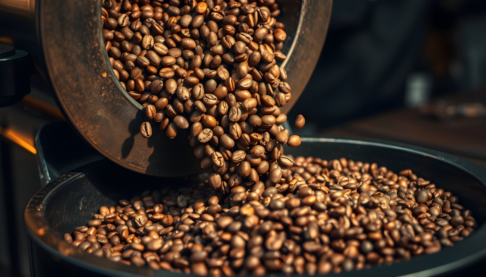
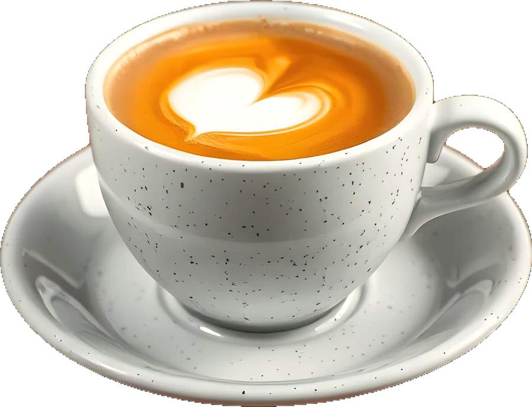
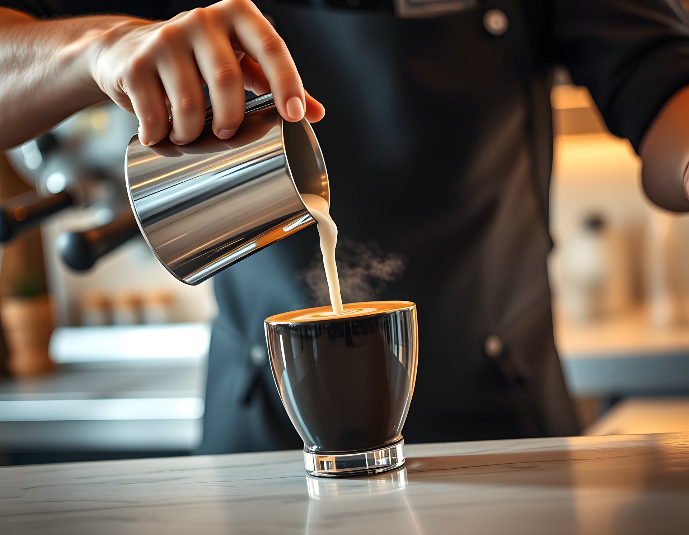
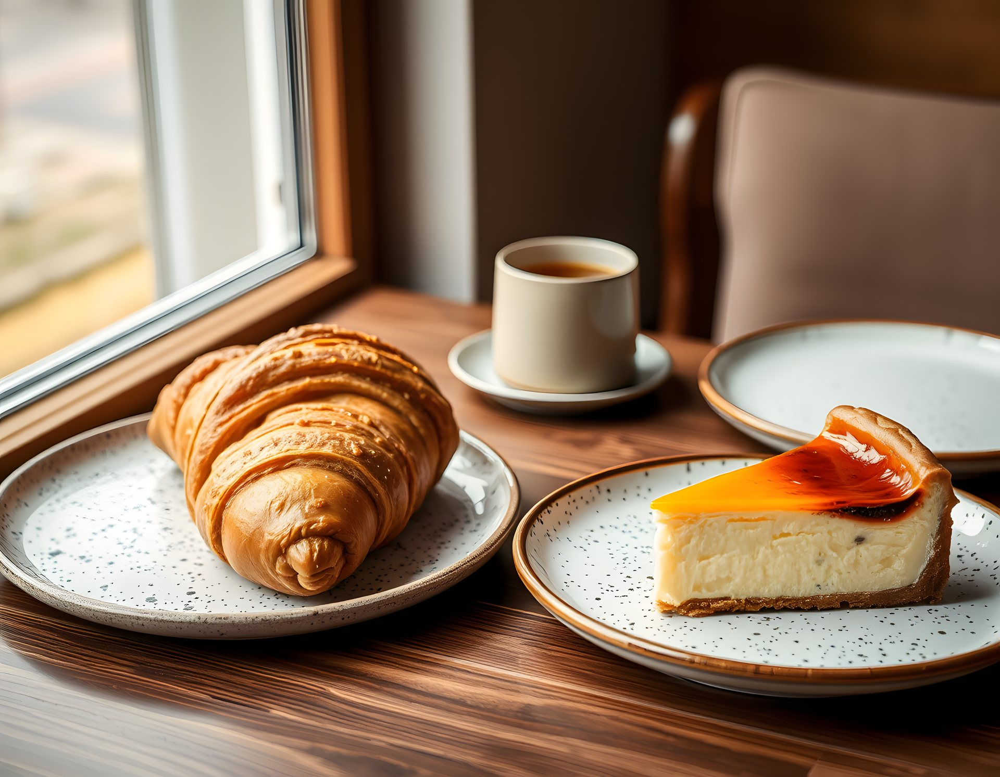
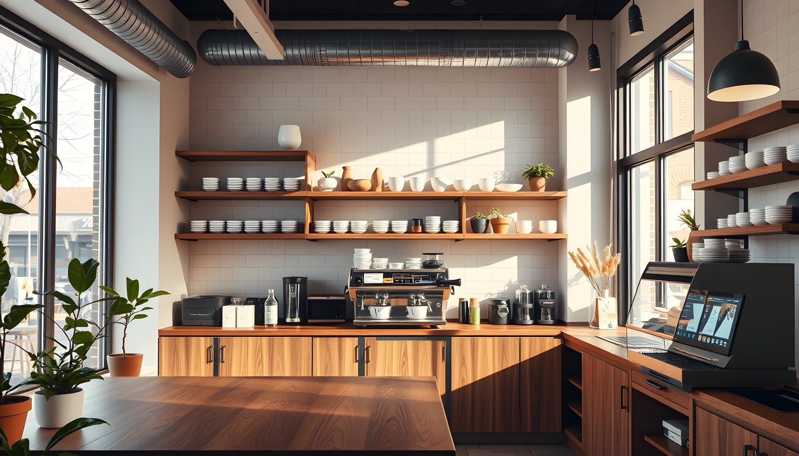

01
Kavurma
Her sabah küçük partiler, 12 dakikalık orta kavrum.

Pamukkale'de, kendi kavurduğumuz çekirdeklerle çalışan küçük bir kahveci. Kahveni seç, masana otur, gerisini bize bırak.
Çalışma saatleriHer fincan dört durak geçer. Kaydırarak takip et.

Her sabah küçük partiler, 12 dakikalık orta kavrum.

18 gram çekirdek, 36 gram espresso, 28 saniye.

İpeksi süt, rozet desen, tam sıcaklıkta.

Her gün fırından kruvasan ve San Sebastian.
